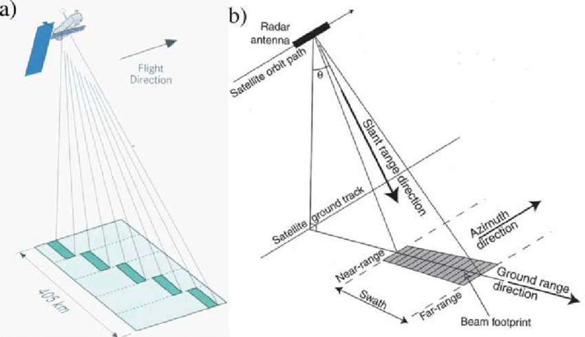
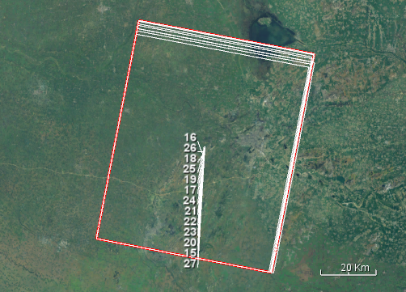

Getting into Land Subsidence Mornitoiring using ENVISAT Dataset
Getting into Land Subsidence Mornitoring using ENVISAT Dataset
This post is about knowladge build of land subsidence mornitoring using ENVISAT1 dataset.

(a) Illustration of ENVISAT ASAR geometry for the Wide-swath Mode, which consists of five narrow-swath beams, each covering a width between 70 and 100 km. Source: ESA 2002. The width of the wide-swath image is about 400 km. (b) Illustration and main terms of satellite SAR geometry. Source: Robinson 2004. Courtesy: Springer, Praxis Publishing Ltd2.
@ABraun3
1 | |
So where do I download Envest images?
1 | |
Which image mode should I download?
1 | |
Can I process different Tracks together?
1 | |
Data Process
SNAP
-
Apply orbit file
-
Subset for ENVISAT dataset
North
West
South
East
POLYGON ((117.426 34.548, 116.711 34.548, 116.711 33.922, 117.426 33.922, 117.426 34.548))

POLYGON ((117.408 34.501, 117.408 33.922, 116.711 33.922, 116.711 34.501, 117.408 34.501))
- Coregistration
Find optimal master, others options with default
- Interferogram formation with topographic phase removal
StamPS-InSAR
StaMPS PS analysis is performed within MATLAB, using the main function stamps(), which takes the first and last StaMPS-step as main arguments. To run StaMPS complete with default arguments, use stamps(1,8)4.